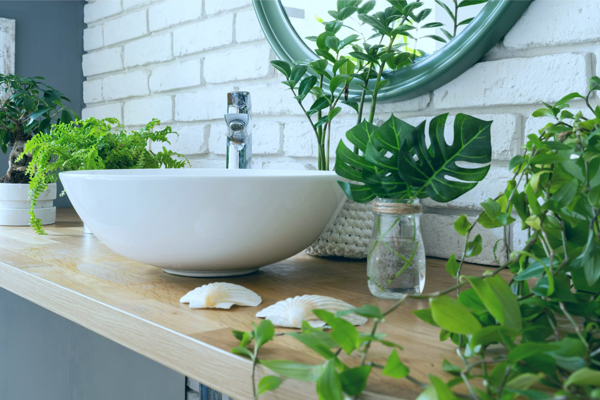
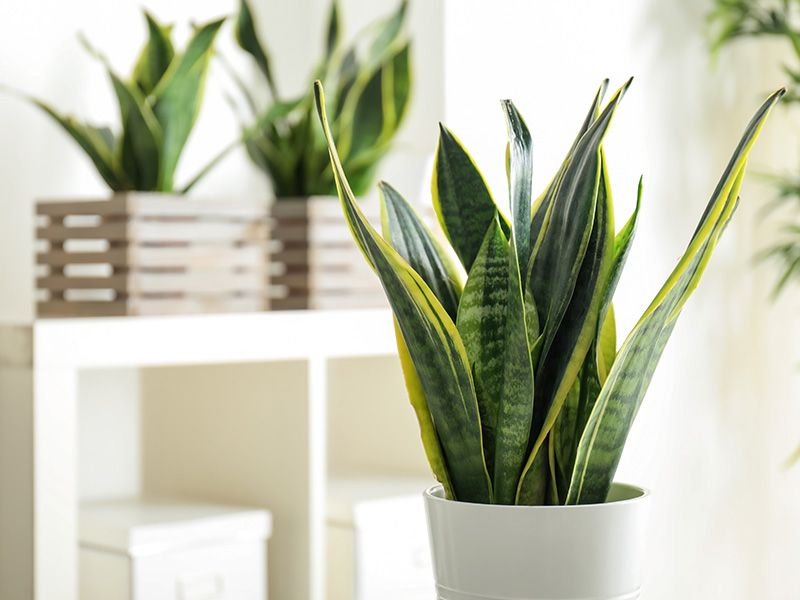
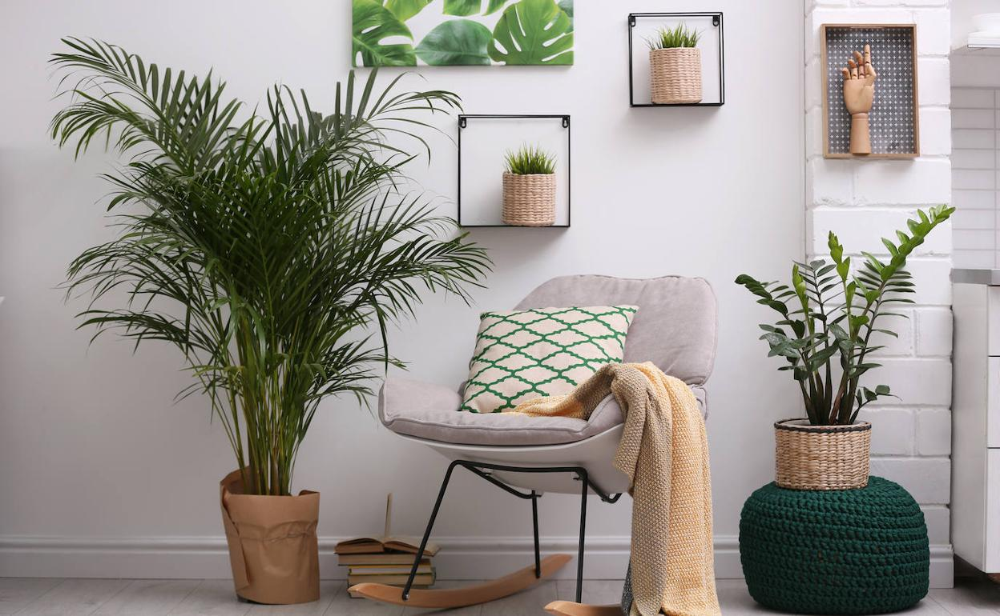
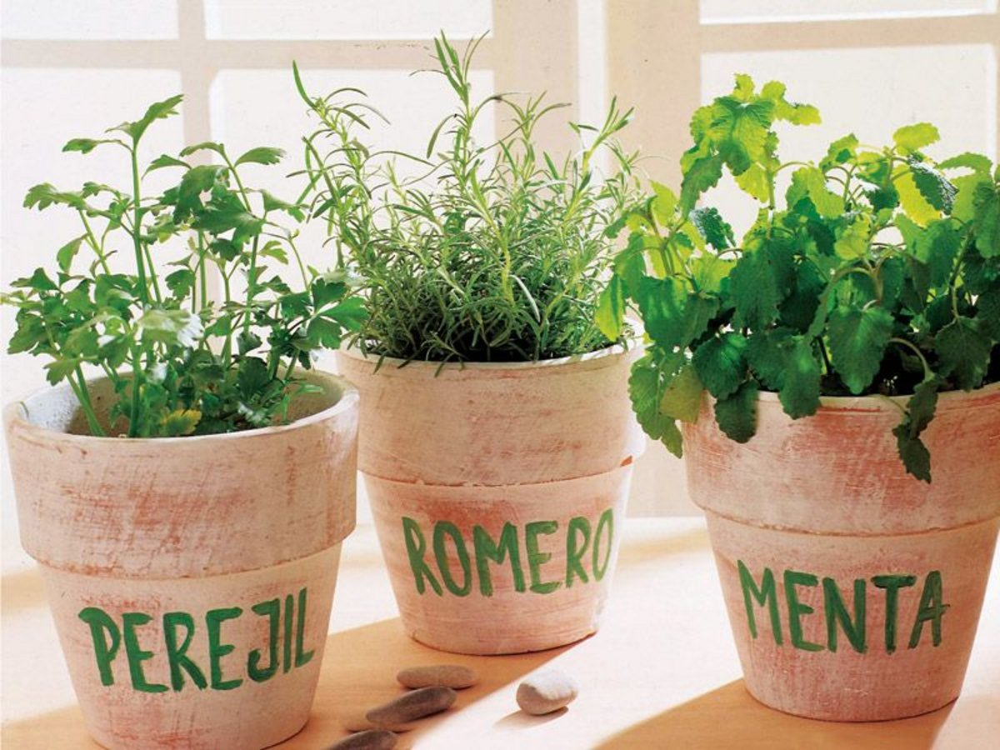
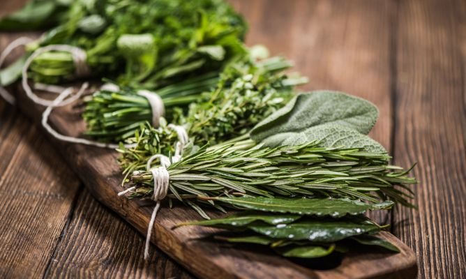

A la hora de decorar tu hogar, puedes prestar mucha atención al diseño y gastarte cantidades desorbitadas en piezas únicas. Sin embargo, eso no significa que tu casa vaya a ser cálida y agradable. Y es que, más allá de la decoración, el interiorismo debe buscar el confort y cierta sensación de “vivido”. Una forma estupenda de conseguirlo es a través de las plantas, no sólo porque aportan frescura al hogar, también porque ofrecen muchos beneficios personales.
Las plantas expulsan dióxido de carbono por la noche, pero el resto del día aportan oxígeno fresco. Además, absorben gases contaminantes, mejoran y purifican el aire y consiguen que el ambiente tenga un poco más de humedad. Es el caso del helecho rizado, que reduce la sequedad al desprender humedad. Otras plantas, por el contrario, limitan el nivel de humedad, como la tillandsia.
Es el caso del espatifilo, que se suele colocar en las habitaciones con más humedad para combatirla. Es muy fácil de mantener y de hecho prefiere menos luz que otras especies, por lo que el baño o la cocina son sitios estupendos para colocarla.
Las plantas son una buena terapia contra el estrés. Te hacen sentir bien, transmiten bienestar, tranquilidad y alegría. Además, su cuidado es, en ocasiones, un reto muy estimulante. Sino, siempre te quedarán las terapias online.
Plantas como los bonsáis, que requieren unos cuidados muy específicos, ayudan a mejorar tu concentración, y cuando salen adelante te hacen sentir orgulloso como si los hubieses criado ¡y es que has hecho algo parecido! Eso explica que, después de un bonsái cuidado con éxito, venga otro y otro… hasta acabar con una buena colección.
Los hogares son más equilibrados y tranquilos cuando tienen plantas porque éstas absorben el ruido y pueden reducirlo ligeramente. Eso sí, no pretendas insonorizar una habitación utilizando plantas porque no lo conseguirás. Su aportación es pequeña, pero importante.
Nos estamos refiriendo a las propiedades del Aloe Vera, cuyo gel tiene un efecto cicatrizante, antiséptico y calmante. Se puede aplicar en quemaduras y heridas pequeñas, aprovechando las maravillas de la medicina natural. Le gusta estar en el exterior y recibir sol directo, así que una terraza o el balcón sería lo más adecuado.
Contar con plantas aromáticas en la zona de la cocina siempre es una buena idea, no solo por su función decorativa sino para proveernos de algo fresco para sazonar los alimentos. Podríamos tener cilantro, albahaca, tomillo, perejil o menta.
